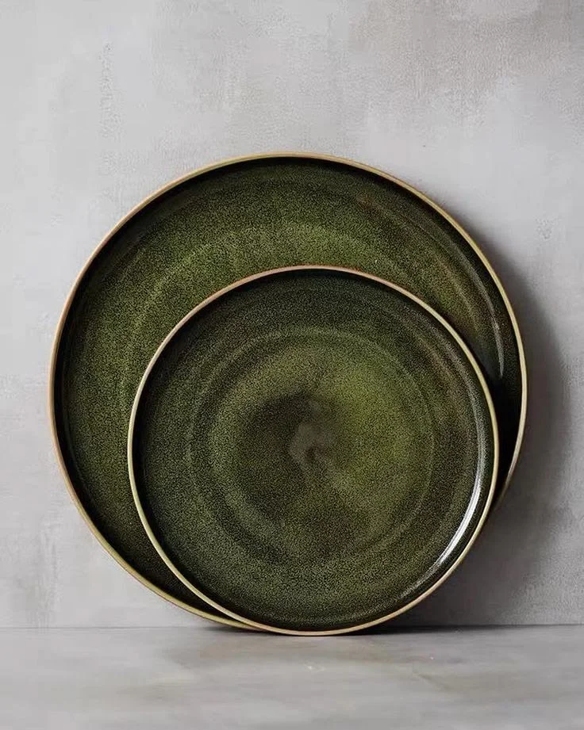
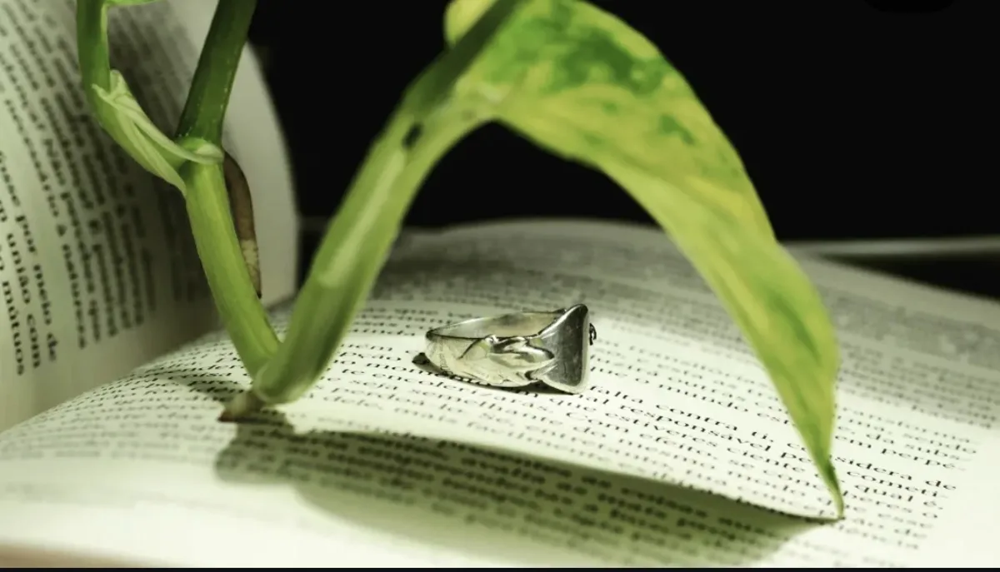

Ateliê de cerâmicaCREATE
Canecas, vasos e potes moldados à mão, com esmaltes que guardam a marca do fogo.
Entrar na cerâmica →
Joias esculpidasAlquimista Dourado
Prata e ouro trabalhados com a imperfeição da natureza. Rituais, presentes e alianças.
Entrar na prata →Peças que começam como matéria e terminam como memória.